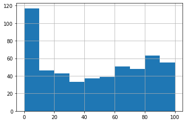

Setup¶
[ ]:
!pip install geopandas # Tables with spatial queries
[ ]:
# Recipe for installing Cartopy: https://github.com/googlecolab/colabtools/issues/85
#!apt-get install libproj-dev proj-data proj-bin
#!apt-get install libgeos-dev
#!pip install cython
!pip install cartopy # Maps
[1]:
import os
import pandas as pd
import numpy as np
import geopandas as gpd
from matplotlib import pyplot as plt
[2]:
import cartopy.io.img_tiles as cimgt
[3]:
#import cartopy
[ ]:
[4]:
from datetime import datetime
[ ]:
from google.colab import drive
drive.mount('/content/drive', force_remount=True)
Import tables¶
[5]:
import os.path as osp
[6]:
DATA_PATH = osp.join(os.environ['DATA_PATH'], 'cciw/Data')
[7]:
#DATA_PATH = r'/content/drive/My Drive/Data'
analysis_path = os.path.join(DATA_PATH, 'Tables', 'Analysis.csv')
dive_path = os.path.join(DATA_PATH, 'Tables', 'Dives.csv')
site_path = os.path.join(DATA_PATH, 'Tables', 'Sites.csv')
merged_path = os.path.join(DATA_PATH, 'Tables', 'MergedTable.csv')
simplified_path = os.path.join(DATA_PATH, 'Tables', 'SimplifiedImagingAnalysis.csv')
[8]:
analysis_df = pd.read_csv(analysis_path, index_col=0,
dtype={'Count':float})
dive_df = pd.read_csv(dive_path, index_col=0, parse_dates=['Date'])
site_df = pd.read_csv(site_path, index_col=0)
merged_df = pd.read_csv(merged_path, index_col=0)
simplified_df = pd.read_csv(simplified_path, index_col=0)
Map diving sites on map¶
[9]:
site_df.set_index('PSN')
[9]:
| Latitude | Longitude | Name | Lake | |
|---|---|---|---|---|
| PSN | ||||
| 1353 | 42.84072 | -79.67396 | Tecumseh Shoal | Erie |
| 1354 | 42.81666 | -79.70433 | Tecumseh Shoal | Erie |
| 1355 | 42.79914 | -79.73840 | Tecumseh Shoal | Erie |
| 1356 | 42.79072 | -79.75648 | Tecumseh Shoal | Erie |
| 1274 | 42.83975 | -79.55354 | Rock Point | Erie |
| ... | ... | ... | ... | ... |
| 1498 | 43.22734 | -79.28509 | Dalhousie | Ontario |
| 1499 | 43.21944 | -79.27194 | Dalhousie | Ontario |
| 1500 | 43.21563 | -79.25978 | Dalhousie | Ontario |
| 1501 | 43.21212 | -79.24797 | Dalhousie | Ontario |
| 1502 | 43.20974 | -79.24886 | Dalhousie | Ontario |
72 rows × 4 columns
[ ]:
cimgt.Stamen?
[10]:
stamen_terrain = cimgt.Stamen(style='terrain-background')
# Load basemap online
[11]:
# Convert DataFrame to GeoDataFrame with WGS-1984 (GPS latitude/longitude) coordinate reference system
site_gdf = gpd.GeoDataFrame(site_df,
crs={'init': 'epsg:4326'},
geometry=gpd.points_from_xy(site_df.Longitude, site_df.Latitude))
/home/angus/anaconda3/envs/cciw/lib/python3.6/site-packages/pyproj/crs/crs.py:53: FutureWarning: '+init=<authority>:<code>' syntax is deprecated. '<authority>:<code>' is the preferred initialization method. When making the change, be mindful of axis order changes: https://pyproj4.github.io/pyproj/stable/gotchas.html#axis-order-changes-in-proj-6
return _prepare_from_string(" ".join(pjargs))
[12]:
# Reproject site coordinates to basemap crs
site_gdf = site_gdf.to_crs(stamen_terrain.crs.proj4_params)
[13]:
# Map sites on basemap
#fig = plt.figure(figsize=(15, 15))
fig = plt.figure(figsize=(12, 7))
ax = plt.axes(projection=stamen_terrain.crs)
ax.set_extent([-81.8, -77.2, 42.2, 44.2])
ax.add_image(stamen_terrain, 8)
#site_gdf.plot(ax=ax, markersize=50, marker='o', facecolor='none', edgecolor='k')
site_gdf.plot(ax=ax, markersize=50, facecolor='k')
plt.tight_layout()
#fig.savefig('dive-sites.eps', format='eps')
#fig.savefig('dive-sites.jpg', format='jpg')
[ ]:
#site_gdf.plot?
Dive table exploration¶
[14]:
dive_df
[14]:
| Cruise # | CSN | PSN | Date | Depth (m) | Overall Coverage | Silt (%) | Clay (%) | Sand (%) | Gravel (%) | Cobble (%) | Rock (%) | Bedrock (%) | Boulders (%) | Shale (%) | Underlying Substrate Type | Underlying Substrate Depth (cm) | |
|---|---|---|---|---|---|---|---|---|---|---|---|---|---|---|---|---|---|
| Dive Index | |||||||||||||||||
| 0 | 201800901 | 1 | 3554 | 2018-06-19 | 20.9 | 1.0 | 0 | 0 | 100 | 0.0 | 0.0 | 0 | 0 | 0 | 0.0 | NaN | NaN |
| 1 | 201800901 | 2 | 3553 | 2018-06-19 | 12.1 | 85.0 | 0 | 0 | 0 | 5.0 | 10.0 | 80 | 0 | 5 | 0.0 | Bedrock | NaN |
| 2 | 201800901 | 3 | 3552 | 2018-06-20 | 6.0 | 90.0 | 0 | 0 | 0 | 0.0 | 10.0 | 30 | 40 | 20 | 0.0 | NaN | NaN |
| 3 | 201800901 | 4 | 3555 | 2018-06-20 | 3.3 | 2.5 | 0 | 0 | 0 | 5.0 | 5.0 | 0 | 90 | 0 | 0.0 | Bedrock | NaN |
| 4 | 201800901 | 5 | 3537 | 2018-06-20 | 20.4 | 10.0 | 0 | 0 | 80 | 0.0 | 15.0 | 5 | 0 | 0 | 0.0 | NaN | NaN |
| ... | ... | ... | ... | ... | ... | ... | ... | ... | ... | ... | ... | ... | ... | ... | ... | ... | ... |
| 531 | 2017-01-903 | 8 | 1351 | 2017-08-16 | 3.7 | 7.5 | 0 | 0 | 0 | 2.0 | 3.0 | 5 | 80 | 10 | 0.0 | NaN | NaN |
| 532 | 2017-01-903 | 9 | 1348 | 2017-08-17 | 18.8 | 60.0 | 15 | 10 | 0 | 25.0 | 25.0 | 25 | 0 | 0 | 0.0 | Glacial Till | NaN |
| 533 | 2017-01-903 | 10 | 1347 | 2017-08-17 | 10.7 | 70.0 | 5 | 0 | 0 | 20.0 | 25.0 | 40 | 0 | 10 | 0.0 | Glacial Till | NaN |
| 534 | 2017-01-903 | 11 | 1346 | 2017-08-17 | 6.0 | 60.0 | 0 | 0 | 0 | 0.0 | 10.0 | 10 | 75 | 5 | 0.0 | Bedrock | NaN |
| 535 | 2017-01-903 | 12 | 1345 | 2017-08-17 | 3.7 | 65.0 | 0 | 0 | 0 | 5.0 | 5.0 | 5 | 85 | 0 | 0.0 | Bedrock | NaN |
536 rows × 17 columns
[15]:
# All boat cruise campaigns
all_cruises = dive_df['Cruise #'].unique()
all_cruises
[15]:
array(['201800901', '201800902', '201800903', '2012-01-607',
'2012-01-609', '2012-01-613', '2013-00-601', '2013-01-601',
'2013-01-604', '2013-01-610', '2013-01-613', '2014-01-602',
'2014-01-605', '2014-01-607', '2014-01-609', '2015-01-601',
'2015-01-602', '2016186-004-012', '2017-00-901', '2017-00-902',
'2017-00-903', '2017-01-901', '2017-01-902', '2017-01-903'],
dtype=object)
[16]:
print(f"Total number of boat cruises: {len(all_cruises)}")
Total number of boat cruises: 24
[17]:
# Count number of dives for each day
dive_df_by_date = dive_df.groupby(by='Date')['PSN'].count()
dive_df_by_date
[17]:
Date
2012-07-09 1
2012-07-10 4
2012-07-11 5
2012-07-12 5
2012-07-13 1
..
2018-08-08 4
2018-08-09 1
2018-08-13 4
2018-08-14 4
2018-08-16 4
Name: PSN, Length: 127, dtype: int64
[18]:
print(f"Total number of days of diving: {len(dive_df_by_date)}")
Total number of days of diving: 127
[19]:
print(f"Date range for diving: {dive_df_by_date.index.min().strftime('%Y-%b-%d')} \
to {dive_df_by_date.index.max().strftime('%Y-%b-%d')}")
Date range for diving: 2012-Jul-09 to 2018-Aug-16
[20]:
# Frequency for number of dives per day
dive_df_by_date.hist(bins=[0.5,1.5,2.5,3.5,4.5,5.5,6.5,7.5,8.5,9.5,10.5])
[20]:
<matplotlib.axes._subplots.AxesSubplot at 0x7f9edf4eae48>
[21]:
# Number of dives for each year-month
dive_df['Year-Month'] = dive_df['Date'].dt.strftime('%Y-%m')
dive_df_by_year_month = dive_df.groupby(by='Year-Month').count()['PSN']
dive_df_by_year_month.index = [datetime.strptime(year_month, '%Y-%m') for year_month in dive_df_by_year_month.index]
dive_df_by_year_month
[21]:
2012-07-01 29
2012-08-01 34
2012-09-01 16
2013-04-01 7
2013-05-01 45
2013-06-01 31
2013-07-01 34
2013-09-01 9
2014-05-01 18
2014-06-01 13
2014-07-01 17
2014-08-01 33
2014-09-01 27
2014-10-01 6
2015-07-01 39
2016-07-01 26
2017-06-01 28
2017-07-01 28
2017-08-01 36
2018-06-01 20
2018-07-01 20
2018-08-01 20
Name: PSN, dtype: int64
[22]:
def line_format(label): # https://stackoverflow.com/questions/30133280/pandas-bar-plot-changes-date-format
"""
Convert time label to the format of pandas line plot
"""
month = label.month_name()[:3]
if month == 'Jul':
month += f'\n{label.year}'
elif month in ['Apr','May','Jun']:
month += f'\n>'
elif month in ['Aug','Sep','Oct']:
month += f'\n<'
return month
[23]:
# Note that we specify rot here
ax = dive_df_by_year_month.plot(kind='bar', figsize=(12, 8), color='#2ecc71', rot=0)
ax.set_xticklabels(map(lambda x: line_format(x), dive_df_by_year_month.index))
[23]:
[Text(0, 0, 'Jul\n2012'),
Text(0, 0, 'Aug\n<'),
Text(0, 0, 'Sep\n<'),
Text(0, 0, 'Apr\n>'),
Text(0, 0, 'May\n>'),
Text(0, 0, 'Jun\n>'),
Text(0, 0, 'Jul\n2013'),
Text(0, 0, 'Sep\n<'),
Text(0, 0, 'May\n>'),
Text(0, 0, 'Jun\n>'),
Text(0, 0, 'Jul\n2014'),
Text(0, 0, 'Aug\n<'),
Text(0, 0, 'Sep\n<'),
Text(0, 0, 'Oct\n<'),
Text(0, 0, 'Jul\n2015'),
Text(0, 0, 'Jul\n2016'),
Text(0, 0, 'Jun\n>'),
Text(0, 0, 'Jul\n2017'),
Text(0, 0, 'Aug\n<'),
Text(0, 0, 'Jun\n>'),
Text(0, 0, 'Jul\n2018'),
Text(0, 0, 'Aug\n<')]
[24]:
# Number of dives for each year
dive_df['Year'] = dive_df['Date'].dt.year
dive_df_by_year = dive_df.groupby(by='Year').count()['PSN']
#dive_df_by_year.index = [datetime.strptime(year, '%Y-%m') for year_month in dive_df_by_year_month.index]
dive_df_by_year
[24]:
Year
2012 79
2013 126
2014 114
2015 39
2016 26
2017 92
2018 60
Name: PSN, dtype: int64
[25]:
dive_df_by_year.plot.bar()
[25]:
<matplotlib.axes._subplots.AxesSubplot at 0x7f9edf2092e8>
[26]:
# Depth in meters of the lake bed at the diving site
dive_df['Depth (m)'].hist()
[26]:
<matplotlib.axes._subplots.AxesSubplot at 0x7f9edf17e550>
[27]:
# Overall percentage mussels coverage for the whole extent of the diving site (as estimated visually by diver)
dive_df['Overall Coverage'].hist()
# Note: this should not be used to estimate percentage coverage within a quadrat
[27]:
<matplotlib.axes._subplots.AxesSubplot at 0x7f9edf0fbf28>

[28]:
# Estimated substrate proportion of the lake bed
dive_substrate_df = dive_df[['Silt (%)', 'Clay (%)', 'Sand (%)', 'Gravel (%)',
'Cobble (%)', 'Rock (%)', 'Bedrock (%)',
'Boulders (%)', 'Shale (%)']]
dive_substrate_df
[28]:
| Silt (%) | Clay (%) | Sand (%) | Gravel (%) | Cobble (%) | Rock (%) | Bedrock (%) | Boulders (%) | Shale (%) | |
|---|---|---|---|---|---|---|---|---|---|
| Dive Index | |||||||||
| 0 | 0 | 0 | 100 | 0.0 | 0.0 | 0 | 0 | 0 | 0.0 |
| 1 | 0 | 0 | 0 | 5.0 | 10.0 | 80 | 0 | 5 | 0.0 |
| 2 | 0 | 0 | 0 | 0.0 | 10.0 | 30 | 40 | 20 | 0.0 |
| 3 | 0 | 0 | 0 | 5.0 | 5.0 | 0 | 90 | 0 | 0.0 |
| 4 | 0 | 0 | 80 | 0.0 | 15.0 | 5 | 0 | 0 | 0.0 |
| ... | ... | ... | ... | ... | ... | ... | ... | ... | ... |
| 531 | 0 | 0 | 0 | 2.0 | 3.0 | 5 | 80 | 10 | 0.0 |
| 532 | 15 | 10 | 0 | 25.0 | 25.0 | 25 | 0 | 0 | 0.0 |
| 533 | 5 | 0 | 0 | 20.0 | 25.0 | 40 | 0 | 10 | 0.0 |
| 534 | 0 | 0 | 0 | 0.0 | 10.0 | 10 | 75 | 5 | 0.0 |
| 535 | 0 | 0 | 0 | 5.0 | 5.0 | 5 | 85 | 0 | 0.0 |
536 rows × 9 columns
[29]:
fig = plt.figure(figsize=(15,15))
ax = fig.gca()
dive_substrate_df.hist(ax=ax)
/home/angus/anaconda3/envs/cciw/lib/python3.6/site-packages/ipykernel_launcher.py:3: UserWarning: To output multiple subplots, the figure containing the passed axes is being cleared
This is separate from the ipykernel package so we can avoid doing imports until
[29]:
array([[<matplotlib.axes._subplots.AxesSubplot object at 0x7f9edf078c88>,
<matplotlib.axes._subplots.AxesSubplot object at 0x7f9edf0676d8>,
<matplotlib.axes._subplots.AxesSubplot object at 0x7f9edf01b940>],
[<matplotlib.axes._subplots.AxesSubplot object at 0x7f9edefd0ba8>,
<matplotlib.axes._subplots.AxesSubplot object at 0x7f9edef87320>,
<matplotlib.axes._subplots.AxesSubplot object at 0x7f9edd461588>],
[<matplotlib.axes._subplots.AxesSubplot object at 0x7f9edd4927f0>,
<matplotlib.axes._subplots.AxesSubplot object at 0x7f9edd446a20>,
<matplotlib.axes._subplots.AxesSubplot object at 0x7f9edd446a90>]],
dtype=object)

[30]:
dive_df['Underlying Substrate Type'].unique()
[30]:
array([nan, 'Bedrock', 'Rock', 'Fractured bedrock', 'Rocks & silt',
'Till minus clay', 'Cobble, gravel & rock',
'Boulders & rock field', 'Boulder field', 'Glacial till',
'Shale bedrock', 'Gravel & rock', 'Gravel and Cobble',
'Cobble/gravel', 'Glacial Till', 'Shale/Clay', 'Clay', 'Sand',
'Clay ', 'Stepped Limestone', 'Gravel', 'Gravel/Cobble',
'Clay till', 'Brittle clay/shale', 'Hard Clay', 'Shale/clay',
'Clay/Shale', 'Rocks', 'Pitted Bedrock'], dtype=object)
[31]:
dive_df['Underlying Substrate Depth (cm)'].unique()
[31]:
array([nan, '0', '10', '15', '2.5', '1', '2', '3', '4', '5', '7.5', '0.5',
'20-30', '1-5', '8', '0.05', '7-10', '3-4', 'Deep', '0-30',
'Variable under roots', 'Unreachable', 'Variable ', '1.5'],
dtype=object)
Analysis Table Exploration¶
[32]:
analysis_df = analysis_df.set_index('Analysis Index')
analysis_df
[32]:
| Dive Index | Quadrat | Live Coverage | Empty Coverage | Biomass | Count | 16mm | 14mm | 12.5mm | 10mm | 8mm | 6.3mm | 4mm | 2mm | |
|---|---|---|---|---|---|---|---|---|---|---|---|---|---|---|
| Analysis Index | ||||||||||||||
| 0 | 0 | 1 | 0.0 | 0.0 | 0.00 | 0.0 | NaN | NaN | NaN | NaN | NaN | NaN | NaN | NaN |
| 1 | 0 | 2 | 0.0 | 0.0 | 0.00 | 0.0 | NaN | NaN | NaN | NaN | NaN | NaN | NaN | NaN |
| 2 | 0 | 3 | 3.0 | 0.0 | 45.17 | 132.0 | 0.007576 | 0.037879 | 0.250000 | 0.045455 | 0.030303 | 0.053030 | 0.234848 | 0.340909 |
| 3 | 1 | 1 | 98.0 | 0.0 | 345.11 | 833.0 | 0.000000 | 0.004802 | 0.075630 | 0.490996 | 0.181273 | 0.042017 | 0.088836 | 0.116447 |
| 4 | 1 | 2 | 99.0 | 0.0 | 319.84 | 647.0 | 0.000000 | 0.003091 | 0.091190 | 0.596600 | 0.202473 | 0.034003 | 0.035549 | 0.037094 |
| ... | ... | ... | ... | ... | ... | ... | ... | ... | ... | ... | ... | ... | ... | ... |
| 1603 | 534 | 2 | 50.0 | 2.0 | 176.19 | 376.0 | 0.000000 | 0.000000 | 0.061170 | 0.441489 | 0.148936 | 0.125000 | 0.170213 | 0.053191 |
| 1604 | 534 | 3 | 40.0 | 5.0 | 173.68 | 401.0 | 0.000000 | 0.000000 | 0.059850 | 0.403990 | 0.184539 | 0.152120 | 0.104738 | 0.094763 |
| 1605 | 535 | 1 | 90.0 | 1.0 | 263.57 | 986.0 | 0.000000 | 0.000000 | 0.012170 | 0.250507 | 0.209939 | 0.118661 | 0.160243 | 0.248479 |
| 1606 | 535 | 2 | 70.0 | 1.0 | 198.31 | 745.0 | 0.000000 | 0.000000 | 0.010738 | 0.276510 | 0.194631 | 0.071141 | 0.095302 | 0.351678 |
| 1607 | 535 | 3 | 10.0 | 0.0 | 47.81 | 161.0 | 0.000000 | 0.000000 | 0.012422 | 0.248447 | 0.341615 | 0.267081 | 0.086957 | 0.043478 |
1608 rows × 14 columns
[33]:
analysis_df[['Live Coverage', 'Empty Coverage']].hist(figsize=(12,4))
[33]:
array([[<matplotlib.axes._subplots.AxesSubplot object at 0x7f9edeefb438>,
<matplotlib.axes._subplots.AxesSubplot object at 0x7f9edee78438>]],
dtype=object)
[34]:
# Frequency of mussels count within a quadrat
plt.hist(analysis_df['Count'].values, bins=[0]+list(np.logspace(np.log10(1),np.log10(10000), 20)))
plt.gca().set_xscale("log")
plt.xlabel('Count (#)')
[34]:
Text(0.5, 0, 'Count (#)')
[35]:
# Frequency of mussels biomass in grams within a quadrat
plt.hist(analysis_df['Biomass'].values, bins=[0]+list(np.logspace(np.log10(1),np.log10(10000), 20)))
plt.gca().set_xscale("log")
plt.xlabel('Biomass (g)')
[35]:
Text(0.5, 0, 'Biomass (g)')
[36]:
analysis_df[['16mm', '14mm', '12.5mm', '10mm', '8mm', '6.3mm', '4mm', '2mm']].hist(figsize=(15,15))
[36]:
array([[<matplotlib.axes._subplots.AxesSubplot object at 0x7f9ee158b320>,
<matplotlib.axes._subplots.AxesSubplot object at 0x7f9edd3d73c8>,
<matplotlib.axes._subplots.AxesSubplot object at 0x7f9edef162e8>],
[<matplotlib.axes._subplots.AxesSubplot object at 0x7f9edd05f6a0>,
<matplotlib.axes._subplots.AxesSubplot object at 0x7f9edcf9b1d0>,
<matplotlib.axes._subplots.AxesSubplot object at 0x7f9edcfc8438>],
[<matplotlib.axes._subplots.AxesSubplot object at 0x7f9edcf776a0>,
<matplotlib.axes._subplots.AxesSubplot object at 0x7f9edcf298d0>,
<matplotlib.axes._subplots.AxesSubplot object at 0x7f9edcf29940>]],
dtype=object)
Count number of rows for each analysis type¶
[ ]:
n_alive = len(analysis_df['Live Coverage'].dropna())
print(f"Number of % live coverage data: {n_alive}")
n_empty = len(analysis_df['Empty Coverage'].dropna())
print(f"Number of % empty coverage data: {n_empty}")
n_biomass = len(analysis_df['Biomass'].dropna())
print(f"Number of biomass data: {n_biomass}")
n_count = len(analysis_df['Count'].dropna())
print(f"Number of count data: {n_count}")
n_bysize = len(analysis_df['10mm'].dropna())
print(f"Number of sorted mussels size data: {n_bysize}")
[ ]:
merged_df.columns
[ ]:
n_alive = len(merged_df['Live Coverage'].dropna())
print(f"Number of % live coverage data associated with image/video/still: {n_alive}")
n_empty = len(merged_df['Empty Coverage'].dropna())
print(f"Number of % empty coverage data associated with image/video/still: {n_empty}")
n_biomass = len(merged_df['Biomass'].dropna())
print(f"Number of biomass data associated with image/video/still: {n_biomass}")
n_count = len(merged_df['Count'].dropna())
print(f"Number of count data associated with image/video/still: {n_count}")
n_bysize = len(merged_df['10mm'].dropna())
print(f"Number of sorted mussels size data associated with image/video/still: {n_bysize}")
[ ]:
simplified_df.columns
[ ]:
n_alive = len(simplified_df['Live Coverage'].dropna())
print(f"Number of % live coverage data with at least one image: {n_alive}")
n_empty = len(simplified_df['Empty Coverage'].dropna())
print(f"Number of % empty coverage data with at least one image: {n_empty}")
n_biomass = len(simplified_df['Biomass'].dropna())
print(f"Number of biomass data with at least one image: {n_biomass}")
n_count = len(simplified_df['Count'].dropna())
print(f"Number of count data with at least one image: {n_count}")
n_bysize = len(simplified_df['10mm'].dropna())
print(f"Number of sorted mussels size data with at least one image: {n_bysize}")
[ ]: